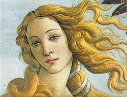
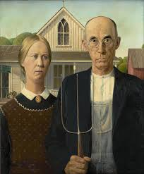
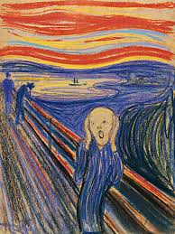

Girl with a Pearl Earring

Artist: Johannes Vermeer
Description Often called the "Mona Lisa of the North," this portrait shows a young girl in exotic dress with a luminous pearl earring, capturing light with striking realism.
Medium: Oil on Canvas
Mona Lisa

Artist: Leonardo da Vinci
Description Portrait of Lisa Gherardini, celebrated for her enigmatic smile and subtle sfumato
Medium: Oil on poplar wood panel
The Birth of Venus
Artist: Sandro Botticelli
Description Shows the goddess Venus emerging from the sea on a shell, a symbol of beauty and classical mythology during the Renaissance.
Medium:Tempera on Canvas
The American Gothic
Artist: Grant Wood
Description A farmer and his daughter stand before a farmhouse, representing rural American values during the Great Depression, with both realism and subtle irony.
Medium:Oil on beaverboard
The Scream
Artist:Edvard Munch
Description An anguished figure under a swirling sky, symbolizing existential dread and modern anxiety, one of the most recognized images in art history.
Medium:Tempera and pastel on cardboard
Quick Links to take another look at the Artworks
Materials Used
- Canvas
- Oil Paint
- Woodblock
- Panel
Steps to Create Your Own Artwork
- Choose subject
- Prepare materials
- Sketch outline
- Apply colors
- Finalize & display
Artwork Comparison
| Artwork | Medium | Year |
|---|---|---|
| Girl with a Pearl Earringt | Oil on Canvas | 1675 |
| Mona Lisa | Oil on Poplar wood panel | 1519 |
| The birth of venus | Tempera on canvas | 1510 |
| The american gothic | oil on beaverboard | 1942 |
| The Scream | Tempera and pastel on cardboard | 1944 |